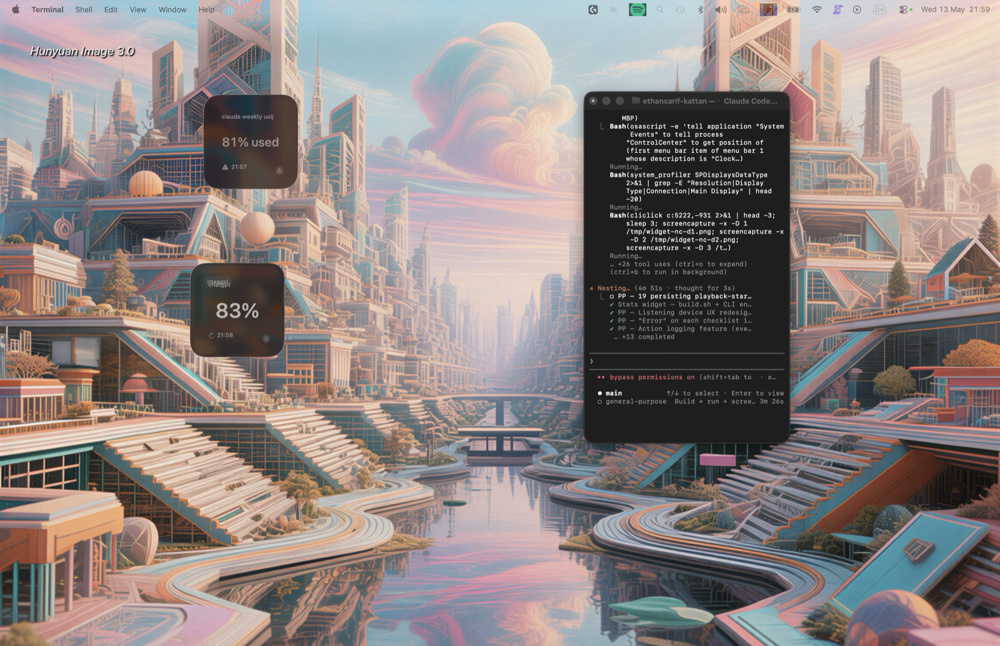

Track any number
If a value lives in the DOM, the widget can show it. No API. No vendor list. Your trackers are configured per-page by you.
NATIVE · WIDGETKIT · MACOS 13+
A native macOS widget that scrapes any value from any logged-in page — your Codex spend, your AWS bill, your bank balance, the number on whatever dashboard you keep refreshing — and pins it to your desktop. Configure it once, glance forever.
MIT-licensed. Direct-download releases are signed, notarized, and Sparkle-updated once the first public release is approved.

Two trackers, picked from the Claude and ChatGPT usage pages, running as real macOS widgets. No screenshot mockup — that's the actual app, refreshing in the background while the rest of macOS gets on with its day.
01 · WHY
You have a number you check too often. The Codex usage page. Your AWS bill. The OpenAI dashboard. Your bank balance. Maybe five different ones, scattered across five different tabs in five different sessions. Each glance costs a context switch you didn't ask for.
Every dashboard already knows the value. It's right there in the DOM. The friction isn't computing the number — it's getting your eyes on it without leaving what you're doing.
The fix: a native macOS widget that signs into the page as you, finds the value, and pins it to your desktop. Configure once, glance forever.
02 · HOW IT WORKS
Open the app, click + Add tracker, point it at the URL of whatever dashboard, account page, or admin panel holds the number you care about.
The in-app browser opens. Sign in like you normally would. Hit Identify element, hover the value until it lights up, click. The app captures the selector and a screenshot region — that's the entire setup.
Pick a widget template, drop it on your desktop or in Notification Centre, and the value refreshes in the background. Sites change layout? The app's self-heal flow walks you through re-picking the element — or hand it to your AI agent over MCP.
03 · WHAT YOU GET
If a value lives in the DOM, the widget can show it. No API. No vendor list. Your trackers are configured per-page by you.
Big number, sparkline, gauge ring, watchlist, dashboard 3-up, snapshot tile, mega grid. Small / medium / large / extra-large. See the catalog →
Compose as many widgets as you want, each with its own template, size, and tracker bindings. One stack for AI spend, another for finances, another for your DAW exports.
Background scrapes use the same persistent browser profile as the in-app sign-in. Cookies, sessions, and passkeys persist across launches. No third-party server, no Chromium bundle.
One named WKWebsiteDataStore shared between the visible browser and the headless scraper. You sign in once. The widget keeps reading.
Your agent — Codex CLI, Claude Code, anything that speaks MCP — can list trackers, trigger scrapes, fix selectors, and compose widgets, end-to-end. More →
Sites change layout. The widget keeps showing the last-known value, then nudges you to re-pick the element — or applies a regex fallback so something always lands on screen.
Trackers, history, and snapshots live in a shared App Group container. Main app writes; widget extension reads; nothing crosses the network unless you point a tracker at one.
SwiftUI + WidgetKit. Real macOS widgets, real launchd-friendly background activity, real OS-tier privacy. Tiny binary, zero runtime overhead.
04 · TEMPLATE GALLERY
Each template is laid out to Apple's verified WidgetKit dimensions (155 / 329 / 690 pt wide), with HIG-compliant margins and Dynamic Type-friendly typography.
05 · INSTALL
The renamed repo is wired to GitHub Releases, a stable latest ZIP alias, and a Sparkle appcast. The first public ZIP appears after the signing/notarization secrets are added and a release run is approved.
Stable link that follows whichever GitHub Release is marked latest. Existing installs use Sparkle from the same release pipeline.
Download MacosWidgetsStatsFromWebsite-latest.zip Requires the first approved public releaseClone, regenerate the Xcode project with XcodeGen, then build the app, widget extension, or CLI schemes locally.
git clone https://github.com/EthanSK/stats-widget-from-website &&
cd stats-widget-from-website && brew install xcodegen && xcodegen generate
Mac App Store/TestFlight needs separate App Store Connect setup. A Homebrew tap can follow once the direct signed release is stable.
Assessed, not enabled yet06 · MCP INTEGRATION
The main app embeds an MCP server. Any external client — Codex CLI, Claude Code, or any tool that speaks MCP — connects over stdio or a UNIX socket and operates the entire tracker fleet.
# MCP server config for Codex / Claude Code
[mcp_servers.macos_widgets_stats_from_website]
command = "/Applications/Stats Widget from Website.app/Contents/MacOS/macos-widgets-stats-from-website"
args = []
enabled = truelist_trackersAll trackers with current values + status.add_trackerAdd a tracker by URL + selector.identify_elementHuman-in-the-loop: opens the in-app browser at url, prompts you to pick, agent polls.trigger_scrapeForce-refresh now.update_selectorApply a self-heal fix from the agent.list_widget_configurationsCompose widgets, change templates, reorder.export_selector_packSerialize a tracker for sharing.The app never spawns AI binaries. Agent involvement always runs in your own agent's session, with your own API keys.
07 · PRINCIPLES
Cookies, sessions, and scraped values stay on your Mac. The app's only network calls are the ones you point it at.
Agent involvement is always opt-in via MCP, in your client. The app doesn't ship Codex, Claude, or any other model.
There is no curated "Codex template", "Claude template", "AWS template". You point a tracker at any URL with a value. The 12 templates are about shape, not content.
macOS WidgetKit has no daily reload cap (it's iOS-only). The app refreshes the widget whenever a meaningful new reading lands — not on an arbitrary throttle.